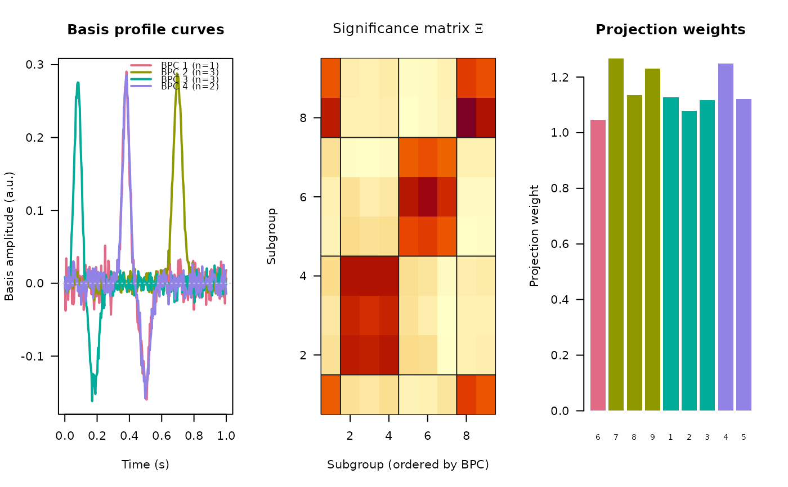

Identifies a small set of canonical temporal response shapes - basis
profile curves (BPCs) - from the single-trial stimulation-evoked
responses recorded at one measurement electrode, where the trials are grouped
by stimulation site (or any other condition). Each stimulation group is
assigned to the BPC that best explains its trials, and the projection
strength of every group is quantified. This is the across-stimulation-site
BPC method (see ‘References’); the related
crp_cluster applies the same idea across electrodes.
Usage
bpc(
x,
groups,
time = NULL,
time_window = NULL,
n_bpc = NULL,
initial_rank = NULL,
zeta_threshold = 1,
null_class = TRUE,
nmf_max_iters = 10000,
nmf_tol = c(1e-04, 1e-08),
verbose = TRUE
)Arguments
- x
numeric matrix of single-trial evoked voltages with shape
time x trials(rows are timepoints, columns are trials). All trials across all stimulation groups are stacked column-wise.- groups
vector of length
ncol(x)(integer, character or factor) giving the stimulation subgroup of each column ofx. At least two subgroups are required and each subgroup needs at least two trials.- time
optional numeric vector of length
nrow(x)giving the stimulus-aligned time (in seconds) of each row ofx. Only used to crop totime_windowand as the plotting axis; the method itself does not require it.- time_window
optional numeric
c(lo, hi)analysis window (seconds); requirestime. AnNAextends to the corresponding data edge.NULL(the default) uses all rows.- n_bpc
integer or
NULL; if given, fixes the number of basis curves and skips automatic rank selection.- initial_rank
integer or
NULL; the startingNMFrank for automatic selection.NULLusesmin(n - 1L, 10L)where \(n\) is the number of subgroups.- zeta_threshold
numeric \(> 0\); rank-selection cutoff on \(\zeta\) (see ‘Details’); smaller values give fewer curves. Defaults to
1, matching theBPCreference.- null_class
logical; if
TRUE(the default) subgroups whose winner-take-all loading falls below \(1/(2\sqrt{n})\) are left unassigned (NA); ifFALSEevery subgroup is forced into a curve.- nmf_max_iters, nmf_tol
passed to
naive_nmf.- verbose
logical; whether to report progress.
Value
A named list of class ravetools_bpc:
curvesNumeric matrix, time \(\times\) number of
BPCs; column \(q\) is the basis profile curve \(B_q(t)\), the first linear-kernelPCAcomponent of its member trials (unit-norm, sign-oriented to a positive mean projection).timeNumeric vector, the (windowed) time axis for
curves; the sample index whentimewas not supplied.group_labelsThe unique stimulation subgroup labels, in the order used by
clustersandxi.clustersInteger vector, the
BPCindex assigned to each subgroup;NAfor subgroups left in the null class.excluded_groupsThe labels of subgroups not represented by any
BPC.weightsA
data.framewith one row per (BPC, subgroup) membership:bpc,group,n_trials,weight(mean residual-normalized \(\alpha\)) andp_value.alphaNumeric matrix, trials \(\times\) number of
BPCs; the per-trial projection \(\alpha\) of every trial onto each basis curve.xiNumeric matrix, the \(n \times n\) significance matrix \(\Xi\).
nmfThe
naive_nmfresult for the selected rank, withH(raw loadings) andH0(winner-take-all, thresholded).n_bpcInteger, the number of basis curves found.
time_windowThe effective analysis window used (or
NULL).
Details
Let \(V\) be the (windowed) \(T \times K\) matrix of all single trials and
let groups map each of the \(K\) columns to one of \(n\) stimulation
subgroups.
Window. When
timeandtime_windoware supplied the rows ofxare cropped to that window; otherwise all rows are used. Rows with non-finite values are dropped.Internal projections. Each trial is \(L_2\)-normalized into \(V_0\), and \(P = V_0^\top V\) collects the projection of every native trial onto every normalized trial.
Significance matrix. For each ordered pair of subgroups \((k, l)\) the set of relevant entries of \(P\) is gathered (the off-diagonal of the within-group block when \(k = l\), the whole cross block otherwise) and reduced to a one-sample t-statistic versus zero. These form the \(n \times n\) significance matrix \(\Xi\).
Rank selection. \(\Xi\) is made non-negative and rescaled, then factorized with
naive_nmfat decreasing inner rank while the degeneracy score \(\zeta\) - the sum of the upper off-diagonal of the row-normalized \(HH^\top\) - exceedszeta_threshold.Assignment. Each subgroup takes its winner-take-all
BPCover the normalizedNMFloadings; withnull_class, loadings below \(1/(2\sqrt{n})\) are left unassigned (the “null” class).Basis curves. Per
BPC, the first linear-kernelPCAcomponent of all trials in its member subgroups, sign-oriented to a positive mean projection.Weights. For each member subgroup the per-trial coefficient \(\alpha\) (projection onto the basis curve) is normalized by the residual magnitude; the mean is the projection weight and a one-sample t-test gives a significance value.
References
The BPC method is described in doi:10.1371/journal.pcbi.1008710
, with
a reference Python implementation at
https://github.com/MultimodalNeuroimagingLab/bpc_jupyter.
Examples
# Three response shapes, several stimulation groups per shape.
# \donttest{
set.seed(1)
n_time <- 300L
tt <- seq(-0.2, 1, length.out = n_time)
shapes <- list(
exp(-((tt - 0.08) / 0.03)^2) - 0.5 * exp(-((tt - 0.18) / 0.04)^2),
exp(-((tt - 0.38) / 0.03)^2) - 0.5 * exp(-((tt - 0.50) / 0.04)^2),
exp(-((tt - 0.70) / 0.04)^2)
)
# 3 stimulation groups per shape, 12 trials each
V <- NULL
groups <- NULL
g <- 0L
for (s in seq_along(shapes)) {
for (rep in seq_len(3L)) {
g <- g + 1L
trials <- outer(shapes[[s]], runif(12L, 0.5, 1.5)) +
matrix(rnorm(n_time * 12L, sd = 0.2), n_time, 12L)
V <- cbind(V, trials)
groups <- c(groups, rep(g, 12L))
}
}
res <- bpc(V, groups, time = tt, time_window = c(0, 1), verbose = TRUE)
#> rank 8: HH^T off-diagonal sum = 7.523 > 1.00, reducing
#> rank 7: HH^T off-diagonal sum = 5.148 > 1.00, reducing
#> rank 6: HH^T off-diagonal sum = 3.754 > 1.00, reducing
#> rank 5: HH^T off-diagonal sum = 2.788 > 1.00, reducing
#> selected rank 4 (HH^T off-diagonal sum = 0.667)
res$n_bpc
#> [1] 4
res$clusters
#> [1] 3 3 3 4 4 1 2 2 2
plot(res)

# }